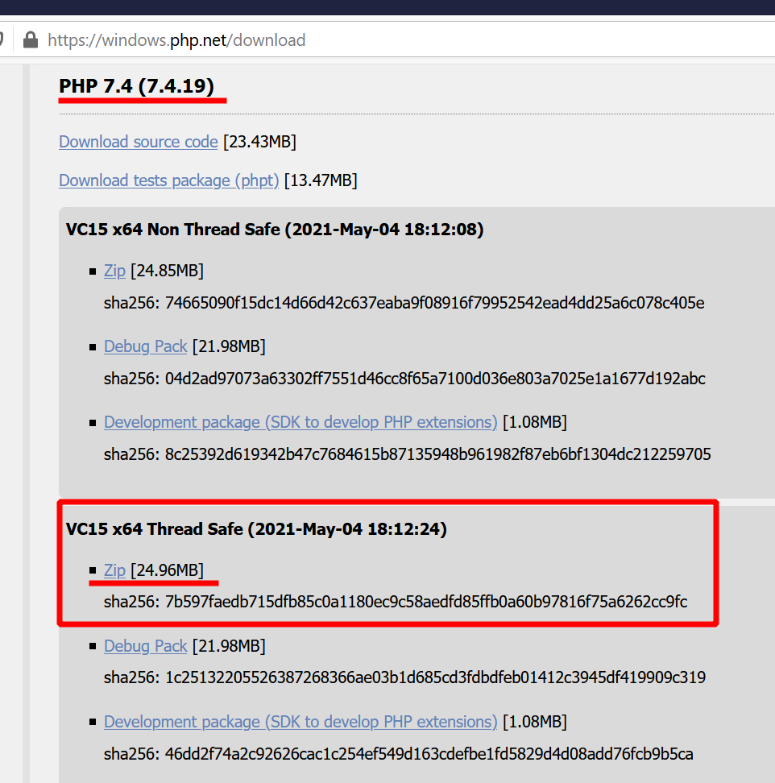
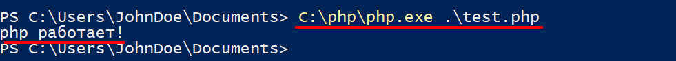
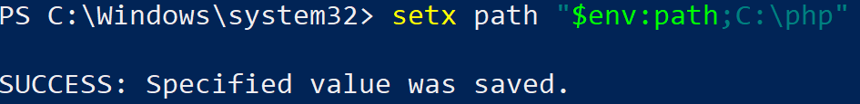
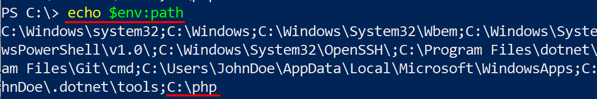
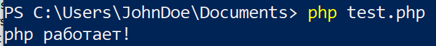
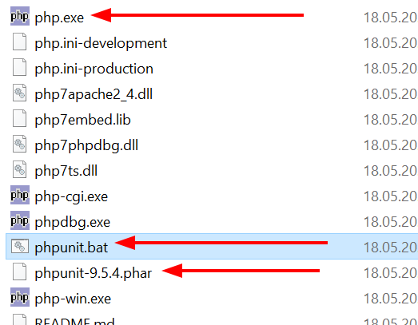
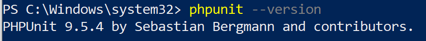
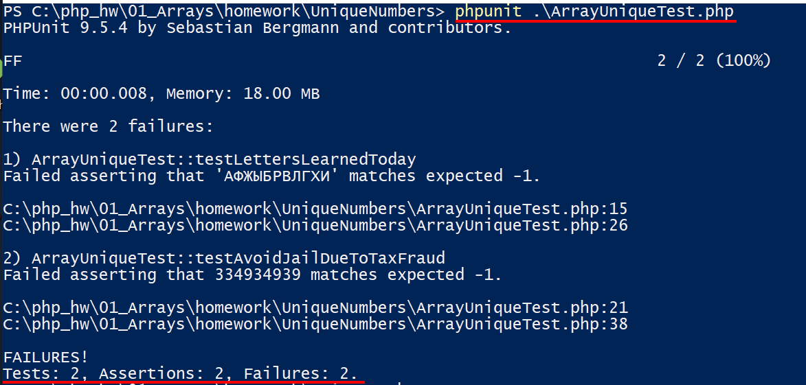

Установка PHP+PhpUnit в Windows 10
Для запуска тестов используя фреймворк PhpUnit нам нужен сам PHP, если его нет, то установим.
Если у вас есть PHP в составе OpenServer, WAMP или другой сборки. Пропускайте шаг с установкой
Установка PHP 7.x
Скачивание
Переходим на сайт и скачиваем последнюю версию 7.x
Нам нужна именно версию ThreadSafe, скачиваем архив zip.

Создайте папку, буду использовать C:/php, и в нее распакуйте содержимое архива.
Можно уже сейчас проверить работу php кода, создайте в любом месте файл test.php с таким содержимым:
<?php
echo "php работает!";
?>
Запускаем передавая путь до файла c кодом интерпретатору C:/php/php.exe:

Мы теперь можем запускать PHP код, уже хорошо!
Настройка PATH
Чтобы каждый раз не писать полный путь до испольняемого файла, добавить в переменную PATH путь, и тогда будет использовать только короткую запись php .\test.php для запуска файлов.
- 💡 рекомендуется сделать бекап ваших настроек, делается командой:
echo $env:path > backup_path.txt
если что пойдет не так - сможете восстановить данные из файла.
Запускайте Powershell (Администратор) и командой добавляем новый путь в PATH для текущего пользователя:
setx path "$env:path;C:\php"

Закройте Powershell и откройте заново, чтобы новые PATH использовался в новой сессии. Проверяем, что путь на месте:
echo $env:path

и теперь запускаем скрипт так:
php test.php

Успех!
Установка PhpUnit
Скачиваем phar архив https://phar.phpunit.de/phpunit.phar
копируйте в папку с php, в нашем случае это C:\php и создайте phpunit.bat в этой же директории:

содержимое файла
@php "%~dp0phpunit-9.5.4.phar" %*
- 💡 Укажите точное название файла, который скоприровали, чтобы версии совпадали.
Проверяем:
phpunit --version

Это явный признак успешной установки! 👍
Запуск тестов
Для запуска тестов из консоли, выполните команду
phpunit "файл_с_тестами"
Пример запуска тестов:

Судя по скриншоту, тесты испольняются, теперь их предстоить только удовлетворить. А это уже другая история 🙂